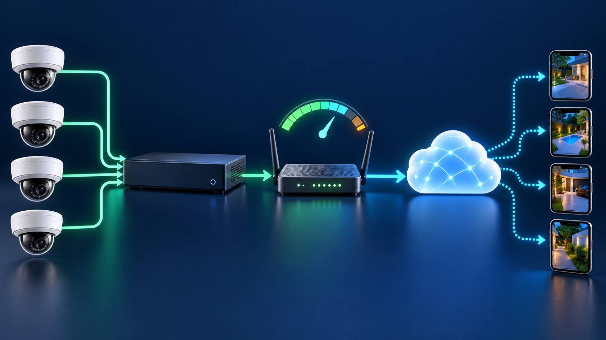
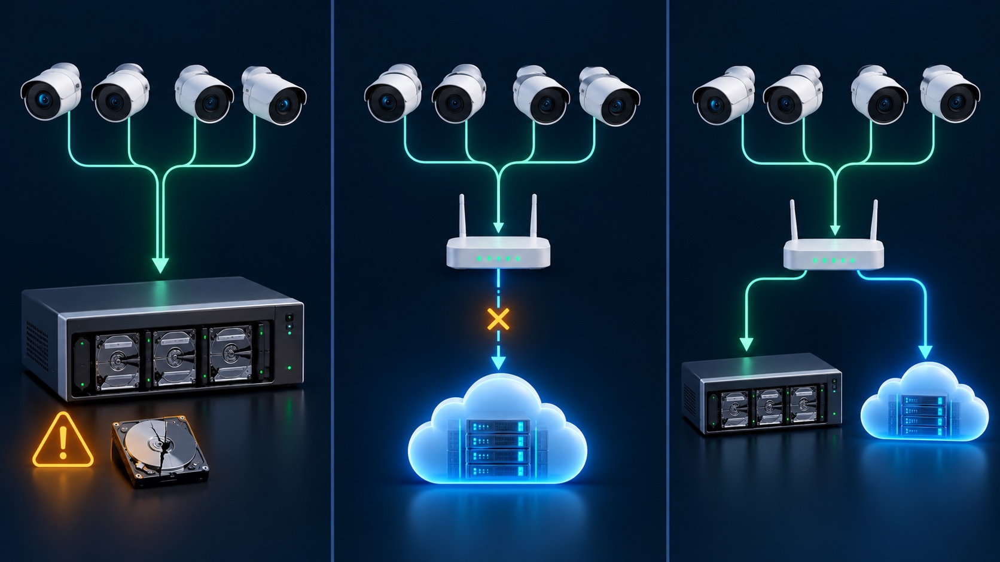
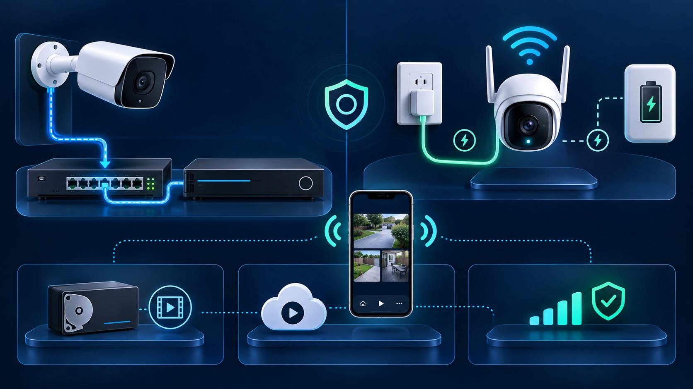
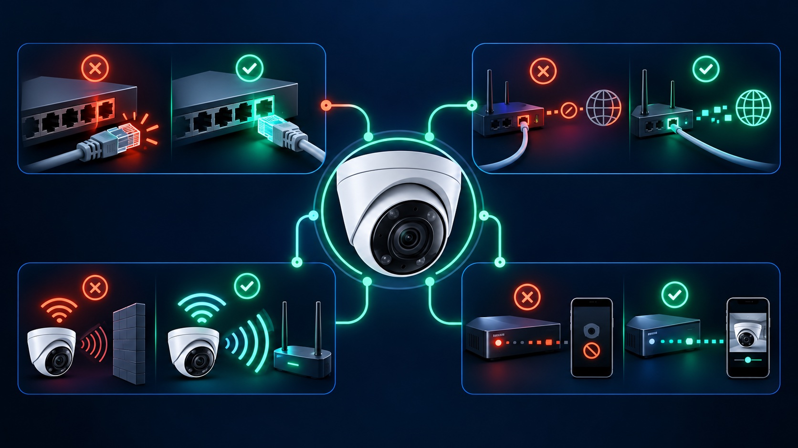

There is no reliable Mbps requirement based only on camera count or resolution. First identify which video must cross the internet, read the configured bitrate of those streams, allow room for simultaneous activity and other users, then test the actual upload path. A local NVR system can record continuously with little internet use, while cloud recording or remotely adopted cameras may upload video for long periods.
When cameras record to an NVR, DVR, NAS or camera memory card on the same property, the full recording stream normally stays on the local network. Internet bandwidth is used when someone views video remotely, when selected clips are archived off-site, or when the platform exchanges notifications and management data. Ubiquiti, for example, documents that its Protect recordings remain local by default while remote viewing connects a client to the on-site console.
This means a six-camera local system does not automatically upload six continuous full-quality streams. The important questions are how many people view remotely at once, which stream quality the application selects, and whether any cloud archive is running.
If the recording destination is outside the property, the camera location must upload the required video. Ubiquiti's remote-camera guidance says bandwidth depends on resolution, encoding and camera quantity, and warns that continuous recording can use substantial bandwidth. Event-only or adaptive recording may reduce demand, but the actual result depends on scene activity and product behavior.
Bitrate is the amount of video data produced per second. Axis explains that it changes with the scene, processing and stream settings. Resolution matters, but so do frame rate, compression, image complexity, noise, lighting and the selected rate-control mode. Two cameras with the same resolution can therefore produce very different traffic.
Read the live or configured bitrate in the camera, recorder or platform. For each path that crosses the internet, add the bitrates of streams that can be active at the same time:
Required camera upload = sum of simultaneous outbound video streams + protocol overhead + operating headroom.
If a platform reports bitrate in kilobits per second, divide by 1,000 for a practical Mbps estimate. Do not plan to consume the full result of one speed test. The connection also carries phones, computers, backups, calls and software updates, and its delivered performance may vary.
An average bitrate can hide a short peak. Variable bitrate rises when a scene becomes more complex or active. Axis notes that limiting maximum bitrate can protect a constrained link, but forcing video under a target may reduce image quality or frame rate. Treat rate limiting as an evidence-quality tradeoff, not a free bandwidth fix.
This is the usual constraint for sending cloud recordings or remote views away from the property. Test from a wired device on the same router when possible so weak Wi-Fi does not disguise the internet service itself.
The phone, office or monitoring station must receive the selected streams. A fast camera-site upload cannot correct a congested mobile connection or weak Wi-Fi where the viewer is located.
Speed alone does not describe responsiveness. FCC broadband measurement reports treat upload, download, latency and packet loss as separate performance measures. High latency can make live controls feel delayed; packet loss or unstable Wi-Fi can cause stalls even when a speed test shows adequate Mbps.
A wireless camera first has to reach the local access point. Poor signal, interference, roaming or an overloaded access point can create recording gaps before traffic reaches the internet. Ubiquiti distinguishes camera-connectivity problems from remote-client problems: weak camera Wi-Fi can affect recorded footage, while a weak remote connection can cause lower-quality playback even when full-quality video remains stored locally.
For a reliable diagnosis, test each layer separately: camera-to-network, camera-to-recorder, property-to-internet, and internet-to-remote viewer. Our camera-offline troubleshooting guide follows that sequence without starting with a factory reset.
Local recording can reduce dependence on internet upload and may continue during an internet outage if cameras, switches and the recorder remain powered. It does not eliminate network planning: the local switches and cabling still carry video, and remote viewing still needs a stable connection. Review the differences in our cloud-versus-local storage guide and the power path in our camera outage guide.
Tech Secure 360 can measure an existing network, map the camera traffic and design local, cloud or hybrid recording for homes and businesses across Greater Los Angeles.

Compare recording paths, outage behavior, retention and evidence protection.

Separate video connection, power, recording and remote access decisions.

Check power, cable, Wi-Fi, network, recorder and remote access in order.
Tell us about your place and we'll respond within one business day with a tailored plan and pricing. Or call us right now.
Your request is in. A Tech Secure 360 specialist will reach out within one business day. Need help now? Call (747) 336-2737.